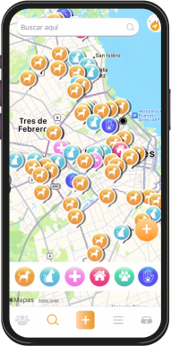
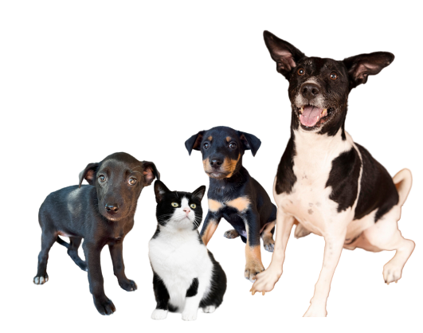

No Encontras a tu Perro o Gato?
Descarga la App
Con nuestra herramienta de geolocalización en tiempo real, vas a poder ubicar a todos los perros y gatos que se encuentren en tu zona.


Reportá en tiempo real
Con un simple click si perdiste o encontraste un perro/ gato.
Ayudá en los reencuentros
Avisale al resto de la comunidad que en determinada ubicación, encontraste un animal.
Instituciones
Interactuá con Veterinarias, Pet Shops y Refugios.
Opiniones de My Pets
Enterate lo que dice la gente sobre My Pets y sus experiencias con nuestra aplicación al encontrar a su mascota perdida.